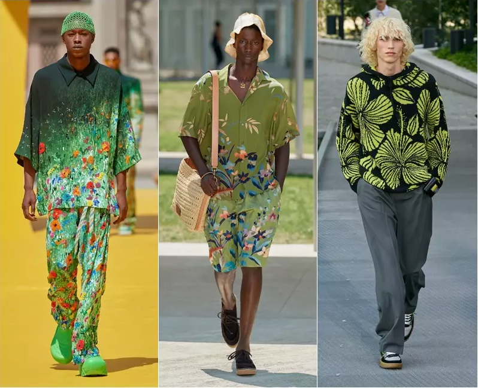
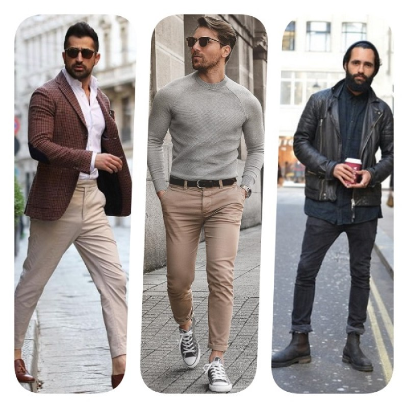

À medida que a primavera floresce, a moda masculina para a temporada traz uma aura de renovação e descontração. Em 2024, os tons suaves e pastéis dominam as paletas, trazendo uma sensação de frescor e leveza. As estampas florais e geométricas se unem para criar visuais vibrantes e dinâmicos. A busca pelo conforto se reflete em tecidos leves e arejados, como algodão e linho, enquanto cortes relaxados e peças de sobreposição criam um estilo casual e versátil. A moda masculina primaveril também incorpora elementos esportivos, com peças inspiradas no streetwear e acessórios como tênis elegantes e mochilas práticas. O resultado é uma abordagem descontraída e elegante, perfeita para aproveitar os dias mais longos e ensolarados. Na primavera de 2024, a moda masculina explora um equilíbrio entre o clássico e o contemporâneo. Cores neutras, como tons de areia e cinza, são combinadas com toques de cores vivas, como azul céu e verde menta. Estilos retrô se fundem com elementos modernos, criando uma estética única e cativante. As estampas listradas e xadrezes ganham destaque, trazendo um charme atemporal aos visuais. Tecidos leves e tecnológicos se mesclam, oferecendo conforto e funcionalidade. A moda masculina da primavera também abraça o minimalismo, com cortes limpos e detalhes sutis. Acessórios como relógios elegantes e óculos de sol clássicos complementam os looks. A estação convida os homens a explorar sua expressão pessoal por meio de uma moda sofisticada e adaptável, perfeitamente alinhada com a renovação que a primavera traz.

No inverno de 2024, a moda masculina abraça o clima frio com uma mistura de elegância e funcionalidade. As paletas de cores se aprofundam em tons de cinza, azul marinho e preto, evocando uma sensação de sofisticação e aconchego. A busca por tecidos quentes e confortáveis é refletida em peças de lã, cashmere e camadas de tecidos isolantes. Silhuetas ajustadas e estruturadas prevalecem, conferindo um ar refinado aos looks. As estampas xadrez e de inspiração nórdica adicionam um toque de tradição e rusticidade. Acessórios como cachecóis volumosos e luvas de couro complementam os visuais, proporcionando tanto estilo quanto proteção contra o frio. Para o inverno de 2024, a moda masculina mergulha em uma fusão entre o urbano e o aventureiro. Cores escuras e ricas, como vinho e verde floresta, se misturam a toques de tons metálicos, criando um visual marcante. Estilos utilitários ganham destaque, com peças como jaquetas acolchoadas, calças cargo e botas resistentes. Os tecidos se tornam mais robustos e texturizados, proporcionando tanto conforto quanto durabilidade. Detalhes como zíperes aparentes e bolsos funcionais incorporam um espírito prático à moda. Acessórios como gorros de lã e óculos escuros adicionam um toque final de personalidade e proteção. A moda masculina para o inverno convida a enfrentar os desafios climáticos com estilo e confiança, explorando um mundo de possibilidades estilísticas mesmo em meio ao frio intenso.